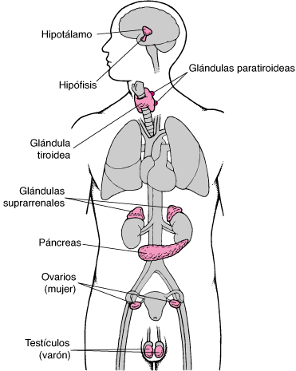
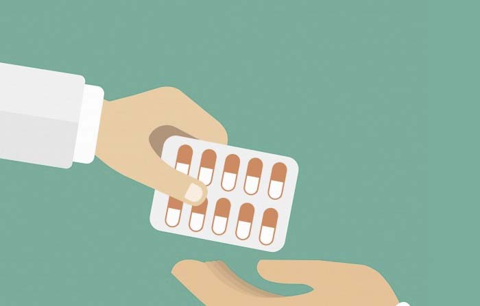
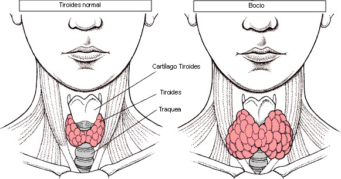

Introducción

El desarrollo de los organismos implica un crecimiento y cambio en las proporciones del cuerpo
Con la activación de los órganos reproductores, los individuos entran en la etapa adulta. Este proceso no puede ser controlado por el sistema nervioso, especializado en respuestas rápidas.
En su lugar, entran en juego las hormonas, sustancias segregadas por glándulas específicas y liberadas en la sangre para ser captadas por otras células. Este sistema de comunicación es similar a la transmisión entre neuronas.
Algunos expertos sugieren que el sistema nervioso evolutivamente surgió a partir del sistema endocrino.
Mientras el sistema endocrino está presente tanto en animales como en plantas, el sistema nervioso es exclusivo de los animales y les permite controlar movimientos y la adquisición de alimento.
Las hormonas

Las hormonas son sustancias químicas liberadas a la sangre por ciertas glándulas, las denominadas por ello glándulas de secreción interna o endocrinas, que actúan sólo sobre los órganos que tienen células con receptores específicos para ellas. Estos órganos son los órganos blanco u órganos diana de la hormona. Un receptor específico es una molécula especial que gracias a su estructura se puede combinar con una determinada hormona e iniciar así una serie de reacciones. El resultado es que las hormonas controlan específicamente la actividad interna de los diferentes tipos de células. De esta forma se regula, por ejemplo, el metabolismo celular, la maduración sexual del niño, el crecimiento del adolescente o la presión sanguínea.
El sistema endocrino
Es el conjunto de todas las glándulas endocrinas. Las principales son:
- Hipotálamo: Es una región del cerebro que cuando recibe impulsos nerviosos puede producir varios tipos de hormonas. La mayoría de ellas actúan sobre la glándula hipófisis.
- Hipófisis: Es una glándula del tamaño de un guisante que se encuentra en el hipotálamo y unida a él. Segrega muchas hormonas diferentes, la mayoría de las cuales actúan sobre las otras glándulas endocrinas, por lo cual se puede decir que prácticamente dirigen todo el sistema endocrino. Se puede diferenciar una parte anterior denominada adenohipófisis y una parte posterior denominada neurohipófisis...
- Tiroides: Es una glándula situada en la base del cuello. Produce la hormona tiroxina, que actúa acelerando el metabolismo celular, y la hormona calcitonina, que favorece el depósito del calcio en los huesos.
- Paratiroides: Esta glándula está formada por cuatro grupos de células situados sobre la glándula tiroides. Segrega la hormona parathormona, que provoca que los huesos liberen calcio a la sangre.
- Suprarrenales: Son dos glándulas pequeñas que se encuentran cada una de ellas sobre un riñón. Producen las hormonas aldosterona, que favorece la reabsorción de sodio en los riñones, el cortisol, que favorece el paso de aminoácidos a glucosa y la adrenalina, que prepara al cuerpo para la acción.
- Páncreas: Esta glándula, además de segregar el jugo digestivo pancreático, por lo cual es una glándula exocrina, también es una glándula endocrina, dado que produce la hormona insulina que posibilita que las células puedan captar la glucosa presente en la sangre.
- Ovarios: Estos órganos además de producir el óvulos también tienen función glandular endocrina, puesto que producen las hormonas denominadas estrógenos que regulan los caracteres sexuales femeninos secundarios (voz aguda, glándulas mamarias, caderas anchas, piel con escasa pilosidad, etc.).
- Testículos: Estos órganos además de producir espermatozoides también tienen función glandular endocrina, puesto que producen la hormona testosterona que regula los caracteres sexuales masculinos secundarios (voz grave, mayor masa muscular, piel con abundante pilosidad, etc.).
El control hormonal
Las glándulas endocrinas pueden tener dos tipos de estímulos: el estímulo nervioso y el estímulo químico.
Estímulo nervioso:

Determinadas situaciones externas o internas (sueño, miedo, falta de afectividad, estrés, ruido, etc.) son captadas por el cerebro que influye en el hipotálamo, el cual envía, a través de la sangre, hormonas que excitan o hormonas que inhiben, según los casos, la hipófisis. Las hormonas hipofisarias, a su vez, excitan o inhiben a las glándulas endocrinas. El resultado es que estas últimas segregarán más o menos hormonas, según se requiera.
Estímulo químico:
La concentración de una hormona en la sangre se puede regular aumentando o disminuyendo la secreción de una hormona hipofisaria, lo cual es debido a la existencia de un mecanismo denominado retroalimentación. Este mecanismo está regido por la hipófisis y las glándulas endocrinas que segregan hormonas que actúan sobre ella.
Enfermedades relacionadas
- Acromegalia: Esta enfermedad consiste en una excesiva producción de la hormona del crecimiento en un adulto. Sus síntomas más característicos son el excesivo crecimiento de las manos, pies, mentón, nariz y de otros huesos del cráneo.
- Bocio: Esta enfermedad consiste en una excesiva producción de la hormona tiroxina. Se caracteriza por un crecimiento excesivo de la tiroides, que implica un bulto anterior en el cuello y exoftalmia (ojos salientes). Además, hay hiperactividad, pérdida de peso, insomnio e irritabilidad. 
- Cretinismo: Esta enfermedad consiste en un déficit de hormona tiroxina durante la infancia. Los efectos son deficiencia mental grave, ritmo metabólico bajo, escaso desarrollo de los genitales y baja estatura. Puede estar causada por déficit de yodo en la dieta o por incapacidad para absorberlo.
- Diabetes mellitus: Esta enfermedad consiste en la carencia o escasez de producción de la hormona insulina. Los síntomas son exceso de glucosa en la sangre, orina abundante, cetones en el aliento, mareos y desmayos. La de tipo 1 o infantil puede deberse a un fallo del sistema inmunológico que destruye las propias células del páncreas productoras de insulina (enfermedad autoinmune). La de tipo 2 o de adulto se puede deber a trastornos del páncreas debidos a la edad.
- Diabetes insípida: Consiste en un déficit de hormona vasopresina. Los síntomas son orina abundante y sed.
- Enanismo hipofisario: Consiste en un crecimiento insuficiente debido a carencia o escasez de producción de la hormona del crecimiento.
- Gigantismo hipofisario: Consiste en un crecimiento excesivo a causa de exceso de hormona del crecimiento.
Normas para detectar trastornos
- Un niño que no crece a un ritmo normal puede estar padeciendo un déficit de hormona del crecimiento.
- Un niño que crece a un ritmo excesivo puede estar padeciendo un exceso de hormona del crecimiento.
- Una persona que constantemente está orinando, se encuentra muy cansada y se ha adelgazado mucho puede tener diabetes.
- Una persona que presenta un aumento del volumen del cuello (bocio), una excesiva prominencia de las órbitas oculares, taquicardia y pérdida de peso, puede padecer bocio.
Si se deja pasar mucho tiempo sin actuar delante de un trastorno de nuestro sistema endocrino, las lesiones pueden ser muy graves. Por ello hace falta estar atentos a los síntomas y, ante la duda, consultar a un médico endocrinólogo.